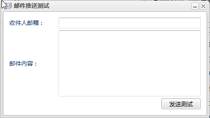
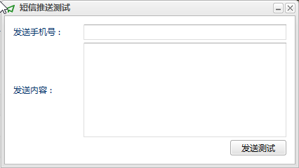
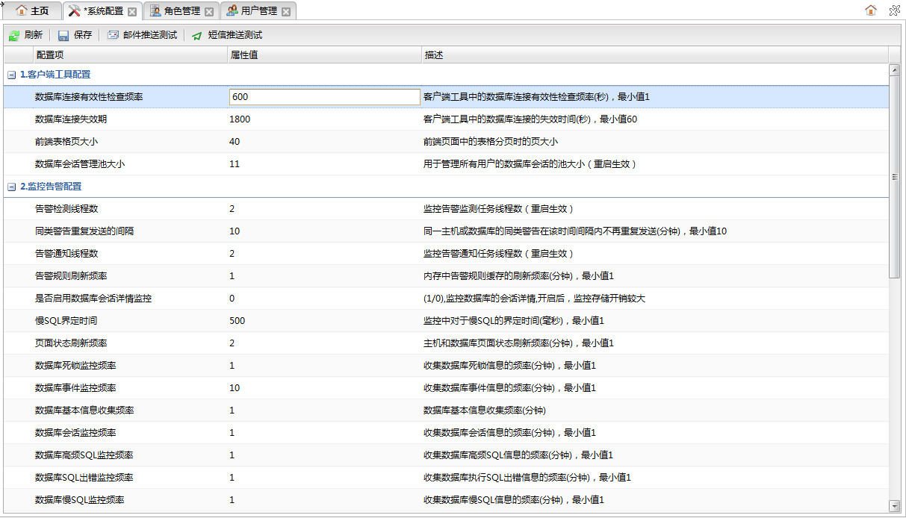
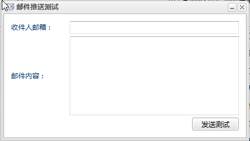
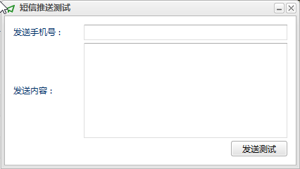

刷新
刷新 保存
保存
输入收件人邮箱地址和邮件内容，点击发送测试按钮进行邮件推送测试。如果收到测试邮件说明系统邮箱配置正确，否则应该检查配置是否有误。

输入手机号和发送内容，点击发送测试按钮进行短信推送测试。如果收到短信说明系统短信推送配置正确，否则应该检测配置是否有误。
双击主页左侧导航树的系统管理节点可以打开系统管理面板。该页面用于系统属性配置，系统管理员可以通过该页面随时调整系统属性，修改的属性保存后可以立即生效。如下图所示:

系统属性可以大致分为五个模块：
1.客户端工具相关配置2.监控告警相关配置3.系统邮箱配置4.短信推送配置5.安全相关配置
具体每个配置项的功能、属性值范围在描述信息中都有说明。每个属性的默认值是系统推荐的配置值。
功能按钮列表
| 按钮 | 说明 |
|---|---|
| 刷新 |
刷新属性列表。未保存的属性修改将会丢失。 |
| 保存 |
保存属性修改。 |
| 邮件推送测试 | 配置系统邮箱后，可以点击该按钮打开邮件推送测试对话框检测配置是否正确，对话框如下所示：  输入收件人邮箱地址和邮件内容，点击发送测试按钮进行邮件推送测试。如果收到测试邮件说明系统邮箱配置正确，否则应该检查配置是否有误。 |
| 短信推送测试 | 配置系统短信推送配置后，可以点击该按钮打开短信推送测试对话框检测配置是否正确, 对话框如下所示：  输入手机号和发送内容，点击发送测试按钮进行短信推送测试。如果收到短信说明系统短信推送配置正确，否则应该检测配置是否有误。 |
系统属性信息列表
表中为系统中所有可配的属性信息列表。
| 字段 | 说明 |
|---|---|
| 配置域 | 属性名称。 |
| 属性值 | 属性值。 |
| 描述 | 属性描述，包括属性的功能，属性值的单位，以及属性值配置范围。 |